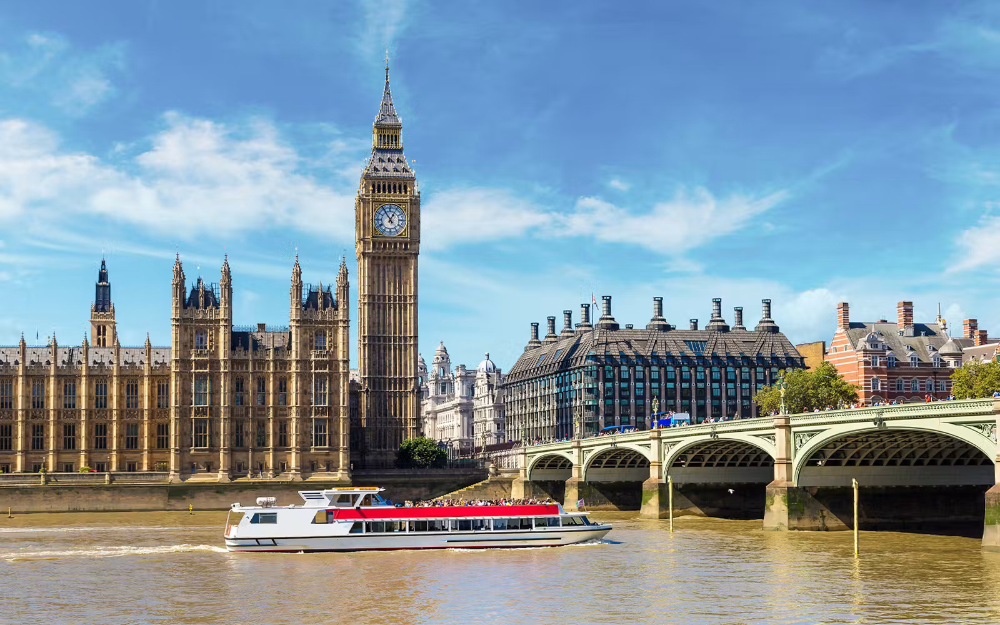
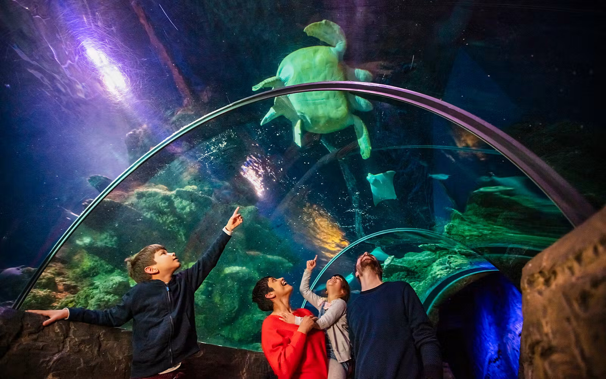
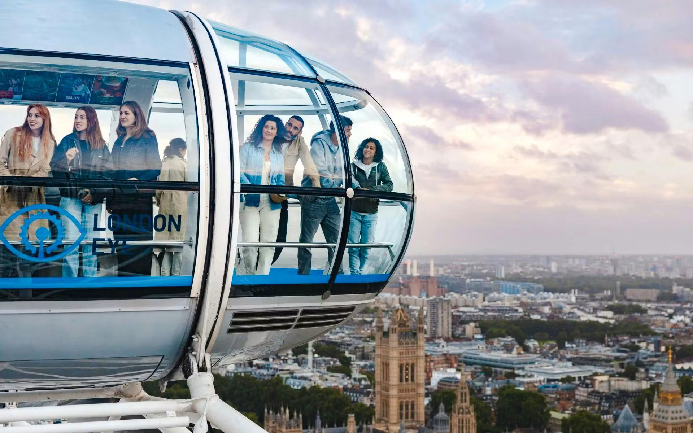
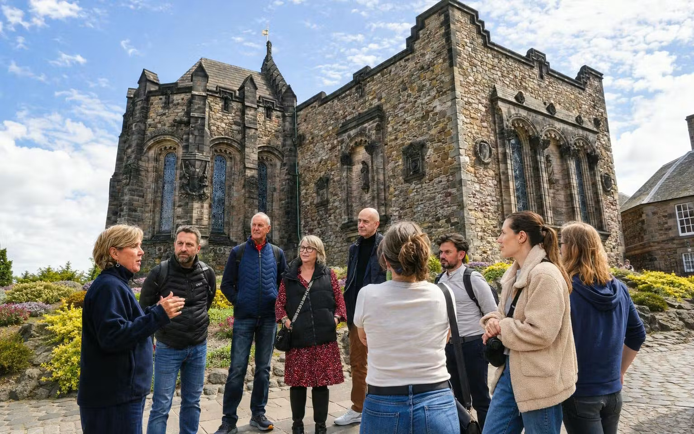

⏰ TimingsUp ~05:45 · leave home 06:30–06:45 · DEL T3 by ~07:15 (3½ hrs before, buffer for traffic + Fast Forward) · check-in closes 09:40 · fly 10:55 (revised) · land LHR 18:10 · hotel ~20:00 · lights out 20:30–21:00 UK — no matter how awake he seems.
IndiGo 6E3 · Stretch/Business (B787-9, leased from Norse) · DEL 10:55 → LHR 18:10 (⚠️ revised by IndiGo on 30 Sep — was 11:10; arrival unchanged), non-stop 11h15m · seats 1D/1E/1F · 12kg cabin + 46kg check-in each · Fast Forward priority · check-in closes 09:40📄 Ticket ↗. Taxi/pre-booked cab to Pullman London St Pancras, 100-110 Euston Road (R360 Booking ID 45183173940800523004, Partner Ref 260825663048 — paid, non-refundable). 🧳 At check-in, remind the front desk about the 2-bag luggage storage for 21–24 Oct — confirmed by email (Georgina, Pullman) but they asked us to flag it again on arrival. Bedtime = jet-lag reset.
⚠️ Timing revised by IndiGo (SMS, 30 Sep): 6E 3 now departs 10:55, not 11:10 — arrival 18:10 unchanged. Keep an eye on SMS/email for any further changes closer to the date: this route runs on 787-9s wet-leased from Norse Atlantic, and IndiGo is ending that lease and suspending Heathrow flights from 25 Oct (last 787 flights ~24 Oct) until its own A350s arrive. Your 17 Oct departure is a week before the cut-off, so only the timing has changed — but any further SMS from IndiGo is worth reading straight away.
🛒 Stroller — bring it through the airport, handy for a tired toddler on the transfer; folds down for the taxi boot or tube gates.
📖 In shortYou leave home between 6:30 and 6:45 AM to reach Delhi T3 by about 7:15 for the 10:55 IndiGo 6E3 flight (IndiGo moved it 15 minutes earlier on 30 Sep — same 18:10 arrival) — now booked in Stretch/Business on a 787-9, seats 1D/1E/1F, with Fast Forward priority through security, so the airport side of the day should be noticeably smoother than a standard economy departure (check-in itself now closes at 09:40, so don't relax the timing). Baggage is up to 46kg check-in + 12kg cabin each, landing at Heathrow at 18:10 local time. From the airport you'll take the Piccadilly line into town (about 55 minutes) or a taxi (around 50 minutes, £45–60) to the Pullman London St Pancras on Euston Road (R360 Booking ID 45183173940800523004, already paid in full and non-refundable) — King's Cross St Pancras station is right outside, about a 4–5 minute walk from the hotel door. Keep dinner simple tonight, since getting everyone to bed matters far more than the meal: there are cafés and grab-and-go options right around King's Cross/St Pancras, or Deliveroo straight to the room. You should be checked in by around 8 PM, with lights out by 8:30–9 PM UK time no matter how wired Aariv seems — tonight's “activity” really is just the flight and the transfer. Dress for comfort on the plane and for a cool ~12°C evening on landing — keep jackets for all three of you in the cabin bag rather than checked.
🚶 ~4,000 stepsAirports + transfers only. No scheduled nap needed — rest = the flight itself; lights out by 20:00 UK, everyone.
🍴 Eat tonight — pick oneFranco Manca pizza (2 min) · Pret grab-and-go · room delivery via Deliveroo. Keep it quick — bed matters more than dinner tonight.
👕 Wear Comfy layers for the plane + slip-on shoes. Landing in ~12° evening: keep jackets for all three in the cabin bag. Aariv: soft joggers + hoodie + jacket on top.
SUN18Oct🏛️ British Museum & Thames cruise🇬🇧 London · 🏛️ British Museum 11:10 · 🚢 cruise board ~16:00 · bed ~20:30Day 2 · 🛒▶

⏰ TimingsExpect a ~06:00 jet-lag wake. Slow breakfast 07:30 · leave ~10:35 · British Museum entry 11:10, taster ~11:10–12:15 · lunch 12:30–13:30 · free/rest time 13:30–14:50 · leave for Westminster Pier 15:00 · board cruise ~16:00 · arrive Greenwich ~17:00–17:15 · brief look around + dinner 17:30–18:30 · DLR/Jubilee back ~19:00 · home ~19:50 · bed ~20:30.
AM: booked British Museum entry 11:10 (order 10909534, free, 3 tickets) — about a 15-min walk from the hotel, or a quick bus/taxi; mummies, Rosetta Stone, Great Court. Midday: lunch near the museum, free time. PM/Eve: booked Thames Sightseeing Cruise, Westminster → Greenwich (booking #33618337, one-way flexible, board 10am–6pm), then dinner before heading back.
🛒 Stroller — good for the museum and the walk to the pier; Aariv can also just doze in it if he needs to, no need to plan a formal nap.
📖 In shortToday now has two things anchoring it — a booked British Museum entry and the Thames cruise this afternoon — with everything else free around them. Expect a genuine 6 AM wake-up from the time change; slow breakfast around 7:30, then it's about a 15-minute walk (or a quick bus/taxi) to the British Museum for your 11:10 entry (order 10909534, 3 tickets, free) — an hour or so of highlights is plenty for Aariv: the Egyptian mummies, the Rosetta Stone, and a look at the Great Court roof. From there, a relaxed lunch near the museum in Bloomsbury, then a genuinely open stretch of the early afternoon — head back toward the hotel to rest, or wander the neighbourhood, whatever suits, no plan needed. Head to Westminster Pier (about 25–30 minutes by tube) for your booked one-way Thames cruise toward Greenwich — it's a flexible ticket so there's no fixed departure to rush for, but aim to board around 4 PM so you're not cutting it too close to dusk. The sail itself is roughly an hour, relaxed and mostly seated. In Greenwich, keep it brief — a look at the Cutty Sark from outside and a short wander is plenty, since you'll need the DLR or Jubilee line back afterward (about 40–45 minutes to the hotel). Have dinner in Greenwich before heading back rather than adding another stop once you're home. Pack for both a mild museum morning and a windy river deck at dusk: warm layers, a waterproof jacket, and a spare change of clothes for Aariv as usual.
🚶 ~7,000 steps An easy indoor hour at the museum, free time, seated cruise in the afternoon — no scheduled nap; let Aariv rest on his own terms (stroller, cruise seat, whenever).
🍴 Eat today — pick per mealLunch near the museum: Franco Manca · Museum Tavern (opposite the British Museum) · Waitrose picnic in Russell Square. Dinner in Greenwich before heading back: a café near the Cutty Sark or Greenwich Market food stalls — keep it quick and toddler-easy rather than a sit-down booking.
👕 Wear Mild museum morning, ~13° by afternoon: warm layer + waterproof jacket, trainers everyone. Aariv: fleece under jacket, spare socks & full change of clothes in the daypack. River deck is windier and colder than town — keep jackets zipped for the cruise.
British Museum order 10909534 · Sun 18 Oct, 11:10 entry, 3 tickets, free · tickets emailed, have them ready on your phone 📄 Ticket ↗. Thames cruise booking #33618337 · one-way flexible ticket, board any pier (Westminster/London Eye/Greenwich/Tower) anytime 10am–6pm · £30 total, charges automatically 16 Oct Manage ↗.
MON19Oct🦖 Dinosaurs — museum day🇬🇧 London · 🦖 NHM 11:00 · 🔬 Science Museum 14:30–15:00 · 🌉 Tower Bridge optional eveDay 3 · 🛒▶
⏰ TimingsUp ~07:15 · breakfast 08:15 · leave 10:15 → NHM at 11:00 sharp (dinosaurs before crowds) · museum lunch 13:15 · Science Museum entry window 14:30–15:00, Garden play ~15:00–15:45 · evening: Tower Bridge (dinner ~18:00, home ~19:45) OR straight home (dinner 17:45, bed 19:30–20:00).
AM:Natural History Museum — booked entry 11:00 (order 20260822-S17424539, free) 📄 Ticket ↗ — T. rex first. PM:Science Museum next door — booked entry window 14:30–15:00 (order 17875983, free) 📄 Ticket ↗, The Garden play zone for under-6s. No scheduled nap — just a rest stop between if he's flagging.
Evening (optional, if energy allows): tube to Tower Hill (~30 min) — walk Tower Bridge lit up at dusk with Tower of London views, dinner at St Katharine Docks. Otherwise straight back to the hotel for an easy dinner nearby — genuinely optional either way. 🚇 Route ↗
🛒 Stroller — museums are step-heavy and both are stroller-friendly; also doubles as a rest spot for Aariv if he flags between exhibits.
📖 In shortToday is two free museums back to back, and both are now locked to actual booked slots — Natural History Museum at 11 AM (order 20260822-S17424539, 2 adults + Aariv, £0) and Science Museum at 14:30–15:00 (order 17875983, 2 adults + 1 child, £0) — so the whole day is built around those two windows. Leave the hotel by 10:00 to reach the Natural History Museum right at its 11 AM slot on the Piccadilly line direct from King's Cross St Pancras — going straight for the T. rex before the crowds build. After a proper sit-down lunch in South Kensington around 13:15 (Comptoir Libanais, the NHM café, or Honest Burgers are all close by), walk over to the Science Museum in good time for your 14:30–15:00 entry window (you can arrive any time in that half hour, but don't cut it fine) and head for The Garden play zone for under-6s. Museums are deceptively step-heavy, so build in that long lunch break, and remember the hotel is a straightforward Piccadilly-line ride away if Aariv fades — there's no scheduled nap block, so just let him rest in the stroller or head back to the hotel if he genuinely needs a break. The evening is genuinely optional both ways: a 30-minute tube ride to Tower Hill lets you walk Tower Bridge lit up at dusk with views of the Tower of London, followed by dinner at St Katharine Docks (the Dickens Inn is a good option) — or just head straight back to the hotel for an easy dinner nearby if Aariv's spent. Museums run warm, so pack light layers you can shed and your comfiest trainers; Aariv does best in a t-shirt under an easy-on-off zip hoodie.
🚶 ~9,000–11,000 steps Museums are secretly step-heavy. Long sit-down lunch between the two; no scheduled nap — if Aariv fades, the hotel is 15 min away or he can rest in the stroller.
🍴 Eat today — pick per mealLunch South Ken: Comptoir Libanais · NHM café · Honest Burgers. Dinner: Dickens Inn at St Katharine Docks (if Tower Bridge) · Franco Manca · Ciao Bella (if straight home).
👕 Wear Museums run warm: light layers you can shed, comfiest trainers (8,000+ steps today). Aariv: t-shirt under a zip hoodie — easy on/off indoors.
TUE20Oct🐠 SEA LIFE + London Eye🇬🇧 London · 🥐 Borough Mkt 09:45 · 🐠 SEA LIFE 11:00 · 🎡 Eye 14:30Day 4 · 🛒▶


⏰ TimingsUp ~07:45 · breakfast 08:30 (light — save room for the market) · leave 09:15 → Borough Market 09:45–10:30 · walk/bus → SEA LIFE 11:00 entry · lunch 12:30 · South Bank stroll/ice cream 13:15–14:00 · London Eye 14:30 · bridge photos · bus home ~15:15 · dinner 17:30 · bed 19:30.
Paddington Bear Experience dropped — not doing it. Morning:Borough Market (open Tue 10am–5pm) — food stalls, pastries, coffee before heading to County Hall. Late morning: booked SEA LIFE London Aquarium entry 11:00 (Headout Booking ID 33619404, £96, 2 adults + 1 child, charges 18 Oct) Manage ↗. PM: booked London Eye entry 14:30 (Booking ID 33619539, £58, 2 adults + 1 infant, charges 18 Oct) Manage ↗ — under-3s ride free, Big Ben photo from Westminster Bridge after, then straight home. Tower Bridge lives on Day 3's evening instead — no need to double up.
🛒 Stroller — a long day out, useful across the market, the South Bank stretch and the queues; no scheduled nap today, so it's also where Aariv can rest if he needs to.
📖 In shortWith Paddington out, today is lighter and now built around two booked slots — SEA LIFE London Aquarium at County Hall, 11:00 entry (Booking ID 33619404, 2 adults + 1 child), and the London Eye at 14:30 (Booking ID 33619539, £58 total, 2 adults + 1 infant, auto-charges 18 Oct). The morning that opened up once Paddington was dropped now has a good use — Borough Market, which is closed Mondays but runs full hours 10am–5pm on Tuesdays, so today's the one weekday it actually works. Leave the hotel by 09:15 (tube via London Bridge, ~30 min), browse the food stalls for pastries/coffee/a snack from about 09:45 to 10:30, then it's a 20–25 minute walk or short bus along the South Bank to County Hall for your 11:00 SEA LIFE entry — don't linger past 10:30 or you'll cut it fine. After the aquarium, a relaxed South Bank lunch around 12:30 (Wahaca has a proper kids' menu, or try Giraffe or a riverside Gail's), then a bit of slack before the Eye — a slow stroll along the river, the book market under Waterloo Bridge, or an ice cream. Aim to be in the queue for your 14:30 Eye slot with 15–20 minutes to spare, then it's a 30-minute rotation — Aariv still rides free under 3 — followed by Big Ben photos from Westminster Bridge, then straight home, with Aariv likely dozing on the bus if he needs it — Tower Bridge already has its slot on Day 3's evening, so there's no need to squeeze it in here too. The riverside is windier than it looks even on a mild day, so a windproof jacket over a warm layer is worth it for everyone, plus a hat for Aariv for the bridge photos.
💰 Today ~£232.50 (₹30,100)🥐 Borough Market snacks ~£20 · 🐠 SEA LIFE £96 (booked, charges 18 Oct) · 🎡 London Eye £58 (booked, charges 18 Oct) · 🚌/🚇 £8 · 🍽️ ~£55. Carry £20–30 cash — market stalls are often cash/card-either but some are card-only.
🚶 ~9,500 steps Borough Market is a slow browse-and-graze, not a rush. Then SEA LIFE slow strolling, a leisurely South Bank gap, and the Eye 30 min sitting. No scheduled nap — quiet stroller time on the bus home if he needs it.
🍴 Eat today — pick per mealBreakfast/snack: Borough Market stalls (Bread Ahead doughnuts, Monmouth Coffee, Kappacasein toasties). Lunch South Bank: Wahaca (kids menu!) · Giraffe · riverside Gail's. Dinner back home: North Sea Fish · Drummond St · Deliveroo to the hotel.
👕 Wear Riverside = windier than it looks: windproof jacket over a warm layer, trainers. Aariv: jacket zipped + hat for the bridge photos.
WED21Oct🚄 Train to Edinburgh🚄 LNER 11:03 → 15:34 · Coach B 55/56/57 · 🏴 Mount Royal from 16:00Day 5 · 🎒▶
⏰ TimingsUp 07:00 · breakfast 08:00 · checkout & store big bags 10:15 · walk 10:35 → King’s Cross 10:40 · 9¾ photo · board 10:50, depart 11:03 · arrive 15:34 · Mount Royal 16:00 · Royal Mile 17:00 · dinner 18:00 · bed 19:30–20:00.
Leave big bags and the stroller with the hotel (returning on the 24th) — go light, carrier only from here on. The Pullman is right next to King's Cross, so there's real slack this morning — or make it a Dishoom King's Cross breakfast (bacon/egg naan, a couple of minutes away) before the train. Platform 9¾ photo, then 11:03 LNER, Coach B (relabelled from A, phone-confirmed) — 55 (window, Aviral/Chhavi), 56 (aisle, Aviral/Chhavi), and Aariv now has his own seat, 57 (window, facing you across the table) → Waverley 15:34 📄 Ticket 1 ↗📄 Ticket 2 ↗📄 Aariv's Ticket ↗. Check in at Mount Royal, 53 Princes St (conf. 6263.527.000, PIN 7709) 📄 Confirmation ↗. Evening: first Royal Mile amble + Grassmarket dinner.
🎒 No stroller from today through the 24th — leave it at the Pullman with the big bags. Edinburgh's cobbles and hills aren't stroller-friendly anyway; carrier/shoulder-rides for the rest of the Scotland leg.
📖 In shortTravel day. Leave your big bags — and the stroller — with the Pullman, you'll be back on the 24th, and pack light for Edinburgh. Being right next to King's Cross this time means the morning has real slack — no need to rush, and there's time for a Dishoom King's Cross breakfast (bacon-and-egg naan, just a couple of minutes' walk) before the train if you fancy it. Either way, there's time for the Platform 9¾ photo before boarding the 11:03 LNER service, Coach B — you're in 55 and 56 (window/aisle), right-hand side of the coach for the scenic coastal views, and Aariv now has his own booked seat, 57, facing you across the same table — which gets you into Edinburgh Waverley at 3:34 PM. From Waverley it's a short trip to check in at the Mount Royal, 53 Princes Street (confirmation 6263.527.000, PIN 7709), aiming to be settled by around 4 PM, before an easy first amble down the Royal Mile and dinner in the Grassmarket area — Makars Mash, Civerinos, or Mums Great Comfort Food are all good picks. The train itself is your rest for the day — four and a half hours to eat, play, and let Aariv doze if he wants to, with no need to force anything. Pack Edinburgh's warmer kit (hats, gloves, extra layers) into your small bag rather than the stored luggage, since it runs 3–4°C colder up north.
🚶 ~6,000 steps Travel day = built-in rest: 4½ hrs on the train for lunch and downtime. Easy evening stroll only.
🍴 Eat today — pick per mealBreakfast: Dishoom King’s Cross (go 09:15) · hotel. Train lunch: M&S picnic from KGX · onboard café. Edinburgh dinner: Makars Mash · Civerinos · Mums Great Comfort Food.
👕 Wear Comfy train clothes. Pack Edinburgh's warmer kit in the small bag: hats, gloves, warm layers — it's 3–4° colder up north. Aariv: window seat on the right for sea views.
Flex tickets valid on 09:53–12:13 departures; seats held only on the 11:03.
🚉 Platform: King's Cross doesn't confirm the platform until roughly 20–30 min before departure (it's not bookable/knowable ahead of time) — watch the big departure boards in the main concourse once you're through the gates. Coach B is the 2nd coach from the front (confirmed from LNER's own coach list — A is the very front, B right behind it, then Cafe Bar/First Class further back), so once the platform's up, walk to the very front of the train. Arriving 10:40 for an 11:03 departure gives you ~20 min — enough, but don't dawdle at the 9¾ photo if the platform's already shown; head down, get settled, then finish photos from the platform if there's time.
THU22Oct🏰 Edinburgh Castle & Old Town🏴 Edinburgh · 🏛️ museum 09:30 · 🏰 castle tour 12:15 · 🎂 buy cake tonightDay 6 · 🎒▶

⏰ TimingsUp 07:30 · relaxed breakfast 08:30 · National Museum of Scotland 09:30–11:00 · Victoria Street stroll 11:00–11:45 · check in for castle tour 12:00 · guided tour 12:15–~14:00 (One O'Clock Gun happens mid-tour) · lunch 14:15 · Greyfriars Bobby 15:15 · free/rest time 15:30–17:00 · Grassmarket dinner 17:30 · arrange tomorrow's cake · bed 19:30–20:00.
AM: National Museum of Scotland (free, no time slot needed) and a stroll down Victoria Street. Midday:Edinburgh Castle — booked guided tour, 12:15pm (Booking ID 33614375, Edinburgh Tickets/Headout, £78, charged 20 Oct) Manage ↗. PM: Greyfriars Bobby (rub the nose), no scheduled nap — rest at the hotel only if he needs it. Arrange tomorrow's cake with the hotel tonight.
🎒 No stroller today — cobbles and the castle esplanade aren't stroller-friendly. Carrier/shoulder-rides only.
📖 In shortThis is the hilliest, hardest-walking day of the trip, and the schedule below is built around your actual booked castle slot — a guided tour at 12:15pm, not the 10 AM self-entry originally planned, so the day runs later across the board. Start with a relaxed morning: the free National Museum of Scotland doesn't need a timed slot, so that's the natural first stop, followed by a wander down Victoria Street on your way up to the castle. Check in for your 12:15 guided English-language tour (2 adults + Aariv, booking ID 33614375) — a guided tour typically runs 1.5–2 hours, which means you'll likely still be up on the esplanade around 1 PM when the One O'Clock Gun fires; since a guided tour has a fixed route and pace you can't simply duck out to skip it this time, so if Aariv is noise-sensitive it's worth packing ear defenders or at least a warning that a loud bang is coming. After the tour finishes around 2 PM, grab a late lunch near Victoria Street — Oink's hog-roast rolls or La Barantine bakery both work. There's no scheduled nap today — if Aariv needs a break, the hotel's a short walk away, but otherwise carry straight on: let him rub Greyfriars Bobby's nose for luck mid-afternoon, then dinner in the Grassmarket around 5:30, and use tonight to arrange tomorrow's birthday cake with the hotel before bed. It's the coldest, windiest stop on the trip, especially up on the castle esplanade, so pack the warmest jacket, hat and gloves for Aariv along with grippy shoes for the cobblestones — and don't be shy about shoulder-rides if he tires on the slopes.
💰 Today ~£90 (₹11,600) + castle tour booked🏰 Castle guided tour £78 (2 adults + Aariv as infant) — auto-charges 20 Oct, not today · museum free · 🍽️ ~£55 lunch+dinner · optional Camera Obscura ~£45. Carry £20–30 cash.
🚶 ~11,000 steps (hilly!) Castle cobbles + Old Town slopes — the hardest walking day, now pushed later since the tour is midday. No scheduled nap; shoulder-rides budgeted if he tires.
👕 Wear Coldest, windiest stop of the trip — castle esplanade especially. Warmest jacket + hat + gloves for Aariv, grippy shoes for cobbles. Consider ear defenders given the tour overlaps the One O'Clock Gun.
FRI23OctAariv turns 3! Highlands day tour🎂 Aariv is 3! · 🚌 check-in 07:45, depart 08:00 · back ~20:30 · cake ~21:00Day 7 · 🎒▶
⏰ Timings 🎂Up ~06:45 · quick breakfast · leave hotel 07:25 · check in 07:45 at Caffe Nero, Parliament Square · depart 08:00 · Forth Bridge → Taste Perthshire → Cairngorms/Aviemore → Inverness → Loch Ness (+ optional cruise/castle) → Ben Nevis photo stop → Glen Coe → past Stirling Castle · back Edinburgh ~20:30 · birthday dinner + cake ~21:00 · bed late tonight, and that's OK.
All day: Highland Experience Tours' Loch Ness, Glen Coe & the Highlands coach tour (booking #374019708). Route: Forth Bridge → Taste Perthshire (hairy coos + refreshments) → Cairngorms & Aviemore → Inverness → Loch Ness (cruise + Urquhart Castle optional, £31 adult/£22 child on the day) → Commando Memorial & Ben Nevis photo stop → Glen Coe & Rannoch Moor → past Stirling Castle & the Wallace Monument → Edinburgh ~20:30. Check in by 07:45 at No. 1 Parliament Square, Royal Mile (inside Caffe Nero), depart 08:00. Cake and birthday dinner happen once you're back that evening.
🎒 No stroller today — the tour's one-bag limit and coach storage rule it out anyway; carrier or lap-sit for the stops.
📖 In shortThis is the year the birthday plan is the road trip itself. You're up early to check in by 7:45 at the Caffe Nero on Parliament Square, just off the Royal Mile — a 10–15 minute walk from the Mount Royal — for an 08:00 departure. The route heads north over the Forth Bridge, stops at Taste Perthshire for refreshments and a chance to meet Highland cows, then runs through the Cairngorms and past Aviemore to Inverness, before reaching Loch Ness itself — bring your camera in case Nessie shows up. A cruise on the loch plus Urquhart Castle is a popular optional extra bookable on the day (£31 per adult, £22 for Aariv, so about £84 for the three of you if you fancy it — not included in what you've already paid). From there it's the Commando Memorial and a photo stop with Ben Nevis, then Glen Coe itself with the guide's telling of the Glen Coe massacre story, past Rannoch Moor (a Skyfall filming location), and home via a drive past Stirling Castle and a glimpse of the Wallace Monument, arriving back in Edinburgh around 8:30 PM. The operator says food options en route are limited, so pack a picnic and snacks the night before rather than counting on a lunch stop — a real consideration with a toddler. It's listed as suitable from age 3, which Aariv hits exactly that morning, so it's worth a quick call to the operator (0131 226 1414) just to confirm a same-day third birthday is fine rather than assuming. Once you're back around 8:30, keep the birthday dinner and cake simple and close to the hotel — it'll be a late, tired end to a very long day, so this isn't the night for a booked sit-down restaurant across town. Pack for changeable Highland weather (it will probably rain at some point) plus something to keep a 3-year-old occupied through several hours of coach seating — downloaded shows, a favourite toy, a travel pillow for the long stretches between stops.
💰 Already paid: £211.28 (₹27,300) 🎂Tour for 2 adults + 1 child, paid. Optional Loch Ness cruise + Urquhart Castle on the day: ~£84 for the three of you (£31 + £31 + £22). Add ~£20–30 for picnic/snacks + a simple dinner once back — skip anything that needs a booking, you'll be back late and tired. Bring some cash too, not every stop takes card.
🪑 Long coach dayNot a walking day — the challenge is the opposite: ~12.5 hours including several hours of coach seating with plenty of stretch/photo stops along the way. No scheduled nap — let him sleep on the coach whenever he will, don't fight it.
🍴 Eat today 🎂 — no lunch stop, pack your ownBreakfast: grab-and-go from the hotel or a bakery before 7:45 (full sit-down breakfast won't fit the timing). Lunch: pack a picnic — sandwiches, fruit, snacks bought the evening before, since the operator says food options on the route are limited (Taste Perthshire has refreshments, but don't rely on it as lunch). Dinner once back (~21:00): keep it close and simple — Deliveroo to the hotel, or a quick Civerinos/pizza if it's still open — plus cake (Colin the Caterpillar from M&S Princes St, buy on the 22nd, or La Barantine).
👕 Wear Changeable Highland weather — waterproof jacket, warm layers, hat, gloves, sunglasses for when it does clear up. Shoes suitable for short walks on rough/uneven ground at the photo stops, not the zoo-day trainers. Luggage: the tour limits you to one small/medium bag per person (≤15kg) plus a small daypack — leave the big bags at the hotel. Pack a small birthday outfit or a fun t-shirt under the fleece for photos at the stops.
🧭 Hotel → Meeting point (Parliament Square / Caffe Nero)🚶 ~12 min🚕 ~5 min
Confirmed booking #374019708 · changes/cancellation: call +44 131 226 1414 (Best Flexible Rate — refund/reschedule/gift-card up to 1hr before departure, minus 10% fee) · QR tickets (×3, needed at check-in) 📄 here ↗ · tour drops you back at 22 St Andrew Square, Edinburgh (short walk/taxi to the Mount Royal). Route may run in reverse depending on conditions. Edinburgh Zoo is dropped from the itinerary for this trip — say the word if you'd rather try to fit it into another day instead. Tour details ↗
SAT24Oct🚄 Back to London⛰️ Calton Hill AM · 🚄 Avanti 12:52 → 18:38 · Coach J 16/18/19 · 🏨 PullmanDay 8 · 🎒▶
⏰ TimingsUp 07:30 · breakfast 08:30 · checkout 10:00, bags at desk · Calton Hill 10:15–11:30 · collect bags, Waverley by 12:20 · depart 12:52 · Euston 18:38 · hotel 18:50 · dinner & flight-packing · bed 21:00.
AM: checkout 11:00, bags at reception → Calton Hill view (10-min climb). 12:52 Avanti from Waverley — Coach J 18–19, Standard Premium (refreshments incl.), forward-facing table seats — J18 aisle, J19 window with power socket, and Aariv now has his own seat too: J16, at the same table, facing you across it → Euston 18:38📄 Ticket 1 ↗📄 Ticket 2 ↗📄 Aariv's Ticket ↗. Short walk to the Pullman London St Pancras (R360 Booking ID 41888004013833504617, Partner Ref NH15002511864002 — paid, non-refundable) 📄 Confirmation ↗. Collect stored bags, pack for the flight: heavy stuff in the 32kg bag.
🎒 Still no stroller — it's in storage at the Pullman from the 21st, and today's just a hill climb + a long sit-down train ride. Back in play from tomorrow.
📖 In shortCheckout at the Mount Royal is 11 AM, with bags left at reception while you climb Calton Hill for the view — about a 10-minute climb. Collect your bags and be at Waverley by 12:20 for the 12:52 Avanti service, Coach J, seats 18–19, Standard Premium with refreshments included — J18 is the aisle seat, J19 the window seat (with its own power socket), both forward-facing at a table. Aariv now has his own booked seat too, J16, one row up at the same table — it's a backwards-facing seat, meaning he's sitting directly across the table from you both rather than beside you, which works out well for a long ride. These tickets are valid only on the 12:52, so don't cut it close. The train ride is nearly six hours, arriving into London Euston at 6:38 PM, and it's built-in rest for everyone — download some cartoons for Aariv as today's real essential. From Euston it's about a 10-minute walk (or a quick taxi with the bags) to the Pullman London St Pancras, this time a Superior Room with a sofa bed for Aariv (R360 Booking ID 41888004013833504617, Partner Ref NH15002511864002). Once you're in around 6:50 PM, collect the bags you stored on the 21st, have dinner, and use the evening to repack for the flight home, putting the heavier items into the two bags upgraded to 32kg.
🚶 ~6,000 stepsCalton Hill is the only climb; then 5¾ hrs of train downtime. No scheduled nap — Aariv's free to doze on the train if he wants, no pressure either way.
🍴 Eat today — pick per mealEdinburgh brunch: Loudons · Söderberg · hotel. Train: Standard Premium refreshments incl. London dinner: Franco Manca · North Sea Fish · Deliveroo while you pack.
👕 Wear Comfy travel layers; 5¾ hrs on the train — downloaded cartoons are today's real essential. Keep one warm layer handy for Calton Hill wind.
Tickets valid ONLY on the 12:52 — be at Waverley by 12:30.
SUN25Oct✈️ Fly home🇬🇧 London · 🛍️ Regent St opens 12:00 · leave hotel 17:30 · ✈️ AI-2016 22:00 → DEL 13:15 MonDay 9 · 🛒▶
⏰ TimingsClocks fell back — enjoy the free hour. Option A: relaxed morning, leave hotel ~10:45 → Oxford Circus ~10:55 → Regent St shops open 12:00, shop 12:00–14:00, hotel ~14:30–15:00. Option B: lazy 08:00 start, sights 10:00–12:30, hotel rest 15:00. Option C: relaxed 08:00 start, tube/walk to Oxford St ~09:30, shop 09:45–12:00, hotel 12:30. All: leave 17:30 → LHR T2 by 18:30 · fly 22:00 · land DEL 13:15 Mon.
Clocks fall back 1 hr overnight (bonus sleep — flight time 22:00 is new time). Three ways to spend the morning:
🧳 Whichever option you pick: check out of the room and leave all the luggage at Pullman reception before heading out (this is a checkout-day, not a late-checkout day) — you're not carrying bags around London on your last morning. Collect everything again when you're back at the hotel in the afternoon, before leaving for Heathrow ~17:30.
🛒 Stroller's back — collected with the bags on the 24th, useful again for Regent St/Oxford St, and a place for Aariv to rest before the flight.
🛋️ Lounge at T2: you'll have ~3 hrs after security — the HSBC Premier card gives unlimited international lounge access with guest visits, so check the HSBC app for which T2 lounge is covered and settle in there with Aariv rather than the gate area.
Option A — 🛍️ Regent Street (swapped in for Bicester Village): no early rush needed — Regent Street's flagships (including Coach, 200-206 Regent St) don't open until 12:00 on Sundays under UK Sunday-trading rules, so a relaxed late morning. Checkout & leave bags at reception by ~10:45 → Victoria line ~10 min to Oxford Circus → Coach is a ~3–4 min walk down Regent St from the station, opens 12:00 → browse Regent Street's other flagships too — Hamleys toy store is right next door, a good stop for Aariv → shop till ~14:00 → back at the hotel by ~14:30–15:00.
Option B — relaxed: checkout & leave bags at reception by ~9:30 → the Horse Guards mounted sentries on Whitehall — on duty daily 10:00–16:00, horses changing on the hour; stand right beside them for the photo (note: the full guard-change ceremonies at both Horse Guards and Buckingham Palace run Mon/Wed/Fri only, which doesn't fit our days). Then a 10-min walk to Buckingham Palace gates. Back at the hotel by ~12:30–13:00 to collect bags whenever you're ready to settle in for the afternoon.
Option C — 🛍️ Oxford Street (no train needed): checkout & leave bags at reception by ~9:15 → Victoria line ~10 min or ~30-min walk to Oxford Street for the high-street shops. Closest and most flexible of the three, easy to cut short. Back at the hotel by ~12:30 to collect bags.
~17:30 leave for Heathrow T2 — taxi ~50 min, or Piccadilly line direct from King's Cross St Pancras (right outside the hotel). AI-2016 22:00 → DEL 13:15 Mon, seats 23A/B/C, 1 bag each (two of the three upgraded to 32kg). PNR EF3LZT 📄 Ticket ↗.
📖 In shortClocks fall back an hour overnight, so you gain some sleep and your 10 PM flight is effectively later than it feels. Option A is now Regent Street instead of Bicester Village: no need to rush since the flagship stores here (Coach at 200-206 Regent St included) don't open until noon on Sundays, so check out and leave bags at reception by around 10:45, take the Victoria line ~10 minutes to Oxford Circus, and you're right by the shops as they open at 12 — Hamleys is next door if Aariv needs a break — then shop until about 2 PM before heading back to the hotel by 2:30–3 PM. Option B is a more relaxed morning: the Horse Guards mounted sentries on Whitehall are on duty daily from 10 to 4 with a horse change on the hour; from there it's a walk to the Buckingham Palace gates. Option C is the closest and most flexible: a quick hop on the Victoria line (about 10 minutes) or a 30-minute walk gets you to Oxford Street for proper high-street shopping without a train booking — easy to shorten if Aariv's tired. Whichever morning you pick, plan for quiet downtime at the hotel from 3 to 5 PM before heading out around 5:30 for Heathrow Terminal 2 for the 10 PM AI-2016 flight, seats 23A/B/C, landing in Delhi at 1:15 PM Monday, PNR EF3LZT — two of your three checked bags are upgraded to 32kg for the way home. Keep passports, printed visas and your receipts pouch in the cabin bag — Indian immigration wants hard copies.
💰 Today ~£80 (₹10,300) + shopping🚕 Airport taxi £45–60 · 🍽️ ~£25 · Options A & C are both now just tube fare (~£4–8 return) + shopping — no train needed either way. Carry passports + spend coins down.
🚶 Option A ~5,500 · Option B ~4,000 · Option C ~6,000 stepsWhatever the morning, quiet hotel downtime before the airport — no scheduled nap, just a calm couple of hours so everyone boards the night flight settled.
🍴 Eat today — pick per mealBreakfast: hotel · Gail's bakery. Lunch: Regent St/Oxford St food halls (Opt A/C) · Covent Garden (Opt B). Early dinner 16:30: Franco Manca quick · then Pret/proper meal at LHR T2 after security.
👕 Wear Plane comfies again; layers off as you head south. Keep printed visas, passports and the ₹/£ receipts pouch in the cabin bag — Indian emigration wants hard copies.
Tower Bridge is genuinely optional here — decide on energy levels in the evening. This is its only slot on the itinerary now (it's no longer also offered on Day 4).
Edinburgh Zoo, the Harry Potter shop and the wet-weather backups (Dynamic Earth, Camera Obscura) are dropped from this day — say the word if you'd like to work one into a different day instead.
🇫🇷 Paris day-trip via Eurostar — ruled out. It needs a separate Schengen visa on top of the UK one, and with only 9 days already packed there's no real spare day to give it without rushing everything else.
🛍️ Shopping
Where to buy Chhavi's Coach bag, the nicest streets to browse, outlet options, and how to get around — all in one place.
💰 Chhavi's shopping budget — ₹1,50,000 (≈ £1,160 at ~₹129/£)
This is her own set-aside pool — the same ₹1,50,000 line already in the Costs tab, not a separate amount. A rough way to split it, purely as a starting point:
🎒 The Coach bag itself: ≈ £250–500 — entry styles (small crossbody/wristlet) run ~£250–300, mid-size classics ~£350–450, larger totes/leather pieces ~£500+. That leaves roughly £650–900 (≈ ₹84,000–1,16,000) for everything else.
🏬 Everything else — clothes, shoes, accessories along Regent St/Oxford St/Bond St/Knightsbridge, spread across whichever days you're passing through.
🎯 Stretch it further at an outlet (Bicester Village or the in-London Wembley option) — 30–60% off means the same budget goes noticeably further if she's happy to shop discounted over full-price boutiques.
Easiest option is honestly St Pancras — it's a real boutique (not a concession), a few minutes' walk from the Pullman, and open long hours even on Sunday. No need to build a whole outing around it.
The Big Bus Hop-on-Hop-off pass is cancelled for now (see Tickets tab), so plan on the Tube: Victoria line from King's Cross St Pancras gets you to Oxford Circus (~10 min) for Regent St/Oxford St, and on to Knightsbridge for Brompton Rd/Harrods. If you rebook Big Bus later, its Blue route covers both areas — Stop 47 near Oxford Circus, Stop 34 outside Harrods — and its route map stays useful either way. 🗺️ Route map ↗
📅 Sales — set expectations
No major UK-wide sale falls in October — Black Friday is late November (after you fly home), and the other big ones are Boxing Day and January. Late October is just school half-term, which brings family-oriented store events, not real discounting. Go in expecting full price rather than hunting for a sale.
Ticks are remembered on this phone (each of you keeps your own), so pack over a few evenings.
📄 Documents pouch (cabin bag, never checked)
👕 Adults (46kg each out — Business upgrade, 1 bag back — leave shopping room)
🧒 Aariv
🎂 Birthday kit (hide from Aariv)
🎟️ Tickets & Bookings
📴 Works offline — once you've opened this app one time on wifi/data (ideally before you fly), every ticket PDF below stays available even with no signal — no need to pre-download anything separately. If you ever clear your browser data, just reopen it online once to re-cache everything.
🏨 Hotel vouchers — show at check-in
🏨 All three hotel vouchers17–21 · 21–24 · 24–25 Oct
Pullman London St Pancras ×2 (paid, non-refundable — R360 45183173940800523004 and 41888004013833504617) · Mount Royal Edinburgh (pay at hotel £695.70 — conf 6263.527.000, PIN 7709). Each day's card also has these under "Today's tickets".
Free timed slots for the skyline garden at 20 Fenchurch St — book when your dates open (late Sept/early Oct — i.e. now; aim for the 11:00 Sunday slot on 25 Oct, done by 12:00 when Regent St opens) · weekday entry starts 10am, Sun 11am, 1 hr per visit · day still undecided — Day 9 (25 Oct, last day) is the best fit since there's no time pressure; doesn't work well on Day 3 or 4 due to timing clashes · under-5s welcome
🛍️ Regent Street shopping (Option A, 25 Oct)No booking needed
Swapped in for Bicester Village. Target: Coach, 200-206 Regent St, London W1B 5BN — bags/accessories, repair & customization service, ~3–4 min walk from Oxford Circus station. ⚠️ Sunday hours are 12:00–18:00 (most Regent St flagships, under UK Sunday-trading rules) — don't head over expecting a morning opening. Hamleys toy store is right next door — an easy stop for Aariv while you browse. No train, no advance tickets — just hop the Victoria line to Oxford Circus whenever you're ready after 12.
🎂 Birthday cake pickupBuy 22 Oct, eat ~21:00 the 23rd
You'll be back late and tired from the Highlands tour — skip booking a table, just grab cake (Colin the Caterpillar, M&S Princes St, or La Barantine) the day before and keep dinner to Deliveroo/quick pizza that night
🛂 UK Visas — GRANTED ✓✓✓Approved 25 Aug · valid 10 Oct 2026 – 10 Apr 2027
All 3 successful, eVisa (digital, no passport stamp) — Aviral ref GWF089842284, passport Y1406968, DOB 29 Apr 1991 · Chhavi ref GWF089843429, passport Y3766049, DOB 3 Sep 1991 · Aariv ref GWF089844138, passport Y3159732, DOB 23 Oct 2023 (child accompanied). eVisas now VIEWABLE in each UKVI account, multiple entries. ✅ Cross-checked against actual passport scans — every number, name and DOB matches exactly, nothing to report.
🔗 Share codes (backup proof if status can't be checked electronically) — Aviral: SZH 79Z 7TS ✅ · Chhavi: S4T 79Z 7JJ ✅ · Aariv: SNY 79Z 785 ✅ (all 3 valid until 4 Dec 2026 — note Aariv's is only valid alongside Aviral Y1406968 or Chhavi Y3766049, per his "child accompanied" visa).
🩺 Travel Insurance — all 3HDFC ERGO · 07 Sep 2026 – 06 Sep 2027
Group Travel Insurance (Overseas Mediclaim), Policy GTI0002992000106, via M/s Vasco Worldwide India Pvt Ltd. Covers Worldwide excl. US/Canada — your UK trip is included. Valid a full year, not just this trip.
📋 Covers (per person): $50,000 emergency medical + evacuation/repatriation, $10,000 accidental death/disablement, $1,000 checked baggage loss, $500 emergency dental, plus flight delay, hospital cash, personal liability and more. Full benefit list and exclusions are in each certificate PDF.
🚨 In an emergency, call HDFC ERGO first (before arranging anything yourselves) — 24hr Help Center: toll-free (globally) +800 08250825, or landline (chargeable) +91-120-4507250 · email travelclaims@hdfcergo.com. Have ready: your name, this Certificate Number, Policy Number, and passport number.
Tata AIG Travel Insurance – International Plus (Gold plan), bought via Policybazaar to close the one gap in the free HDFC ERGO policy above: this one actually covers Trip Cancellation (up to $750) and Trip Curtailment (up to $750), plus Missed Flight/Connection ($500) and Bounced Hotel/Airline Booking ($750). ₹911 each, ₹2,733 total for all 3 — the two policies stack, they don't replace each other.
Aviral — Policy 7103364707 · passport Y1406968. Chhavi — Policy 7103364708 · passport Y3766049. Aariv — Policy 7103364709 · passport Y3159732. Cover runs 17–26 Oct 2026 (single trip, a day's buffer past your 25 Oct return).
📋 Also covers (per person): medical expenses unlimited overall with $250,000 per incident (higher per-incident limit than HDFC ERGO's $50k), emergency evacuation, $15,000 accidental death/disablement, $300 checked-baggage loss, $250 lost passport, $200,000 personal liability, flight/baggage delay, and more. Full terms in each policy PDF.
🚨 To claim: Policybazaar claims desk — toll-free 1800-258-5881, NRI +91-124-6166633, email travelclaims@policybazaar.com (they send a 24×7 WhatsApp claims link). Insurer-side (Tata AIG via Europ Assistance): +91-22-68227600, email ea.tataclaims@europ-assistance.in. Have the Policy Number and passport number ready.
✈️ IndiGo 6E3 · DEL → LHRSat 17 Oct · 10:55 → 18:10 (revised 30 Sep) · Stretch/Business (B787-9)
Upgraded to Business ✅ · Seats 1D/1E/1F · 12kg cabin + 46kg check-in each · Fast Forward priority · check-in closes 09:40 (departure moved 11:10 → 10:55 by IndiGo, 30 Sep; arrival still 18:10) · Booking.com 40-1069523777 · PIN 1331 · ref VB97QZ · reissued Business e-ticket on file, total fare ₹1,67,724
Superior Room, 1 King Bed + sofa bed · 2 adults + 1 child · R360 Booking ID 45183173940800523004 · Partner Ref 260825663048 · ₹128,674 total (₹39,742 via points + ₹88,932 cash) · ✅ PAID IN FULL — 100% non-refundable (cutoff 25 Aug already passed) · breakfast NOT included (~£26pp optional) · booked via Cleartrip/HDFC SmartBuy
🧳 Luggage storage confirmed — 2 large bags OK for the 21–24 Oct Edinburgh gap, noted on the booking (Georgina, 7 Sep). Remind front desk again at check-in. 🛏️ Upgrade also requested/noted — not promised.
Cancelled before the 17 Oct auto-charge, so nothing was paid. Was: 48hr pass from Mon 19 Oct, 2 adults, £94.98, Headout Booking ID 33924469. Left here in case plans change — rebooking is easy, and everything below (routes, walking tours, stops) still applies if you do.
2 adults + 1 child · £0.00 · order 20260822-S17424549 · a spare, just in case Monday doesn't happen. ⚠️ Heads up: 14:00 on the 20th clashes with Day 4's plan (SEA LIFE/lunch/London Eye) — only use this backup if you skip or rearrange that day instead, don't try to do both.
✅ Final and settled: original Coach A 55/56 got reformed to Coach B (briefly showing 36/39 on a reissue) — a call to Trainline support on 06 Sep 2026 moved it back to seats 55/56, ref 546920566196, and the PDFs below now print 55/56 directly. Nothing more to chase on this booking.
🎉 Seat map confirmed: 55/56 are on the right-hand side of the coach in the direction of travel — the scenic side for the East Coast Main Line coastal views. They're also at a table, and Aariv's seat 57 (plus the spare seat 58) is the pair facing you across that same table — so the three of you are face-to-face for the whole journey, not just across the aisle.
🚄 LNER · Aariv's own seatWed 21 Oct · 11:03 → 15:34 · same train
Coach B, seat 57 (window, facing you across the table from seat 56) · Child fare, 70min Flex Single · £25.70 · booked direct with LNER · ticket CBB4N99KWRD · booking ref DY886690
🎂 Highland Experience · Loch Ness, Glen Coe & the HighlandsFri 23 Oct · 07:45 check-in → ~20:30
2 adults + 1 child · £211.28 paid (£195.80 tour + £15.48 Best Flexible Rate) · booking #374019708 · meet at Caffe Nero, 1 Parliament Square, Edinburgh EH1 1RF, check-in closes 15 min before departure (by 7:45am) · tour ends back at 22 St Andrew Square, Edinburgh · Loch Ness cruise/Urquhart Castle are optional extras on the day (£31/adult, £22/child, cash to the driver-guide) · Best Flexible Rate — can be converted to gift card, rescheduled, or refunded up to 1 hour before departure, minus a 10% protection fee · child policy confirms age 3+ accepted with proof of age (passport or birth certificate — Aariv's is already on file below) · changes/cancel: +44 131 226 1414
🚄 Avanti · Aariv's own seatSat 24 Oct · 12:52 → 18:38 · same train
Coach J, seat 16 (window, backwards-facing, same table as you — he faces you across it, power socket) · Child fare, Advance Single Standard Premium · £96.25 · ticket PIB4MVKKDZ2 · booking ref 22636576 / NRS MH942627
🏨 Pullman London St Pancras (return)24–25 Oct · 1 night
Superior Room, 1 King Bed + sofa bed · 2 adults + 1 child, Aariv accounted for ✓ · R360 Booking ID 41888004013833504617 · Partner Ref NH15002511864002 · ₹39,762 total (cash) · ✅ PAID IN FULL — 100% non-refundable · breakfast NOT included (~£26pp optional) · booked via MakeMyTrip/HDFC SmartBuy
Day-by-day meal choices live on each Day card (🍴 Eat block). Every card below opens the Google Maps place page — photos, reviews, menus and live "busy times" — which is exactly how locals vet a café here (Google Maps is the UK's Zomato). Prices are rough totals for 2 adults + Aariv.
Check today's real rate on Google ("GBP to INR") before you fly — this box just does the quick math with whatever rate you type in.
Total incl. service
£67.50
Bill £60.00 + 12.5% service £7.50
£22.50Each (÷3)
£33.75÷2 (skip Aariv)
Most UK restaurants already add 12.5% "optional" service to the bill — check before adding your own tip on top. Cafés/takeaway: no tip expected, round up if you liked it.
💰 Costs (₹)
Booked so far
≈ ₹7.18 L
₹5,94,933 already paid
Still to pay
≈ ₹1.24 L
Mount Royal at hotel + 4 auto-charges
Likely total
₹9.0–9.5 L
excl. shopping · at ~₹129/£
Grand total
₹10.5–11 L
incl. ₹1.5 L shopping budget
Item
Amount
Status
✈️ Flights out — IndiGo 6E3 (Stretch/Business upgrade)
₹1,67,724
✅ Paid in full (per reissued e-ticket)
✈️ Flights back — AI-2016
₹150,073
✅ Paid
🚄 Trains — London ⇄ Edinburgh
≈ ₹78,700
✅ Paid (2 adults both directions, premium seats back + Aariv's own seat both legs — LNER £25.70 + Avanti £96.25)
🏨 Pullman St Pancras ×4 nights
₹128,674
✅ Paid (₹39,742 points + ₹88,932 cash)
🏨 Mount Royal ×3 nights
₹89,593
💷 Pay at hotel (£695.70)
🏨 Pullman St Pancras ×1 night
₹39,762
✅ Paid (cash)
🎂 Highland Experience tour
≈ ₹27,300
✅ Paid (£211.28) — 23 Oct, birthday
🏰 Edinburgh Castle guided tour
≈ ₹10,100
💳 Booked (£78) — auto-charges 20 Oct
🚢 Thames Sightseeing Cruise
≈ ₹3,900
💳 Booked (£30) — auto-charges 16 Oct
🐠 SEA LIFE London Aquarium
≈ ₹12,400
💳 Booked (£96) — auto-charges 18 Oct
🎡 London Eye
≈ ₹7,500
💳 Booked (£58) — auto-charges 18 Oct
🚌 Big Bus Hop-on-Hop-off (48hr)
₹0
❌ Cancelled — for now, before the 17 Oct charge, nothing paid
✅ ₹5,94,933 paid · 💷 ₹89,593 at hotel (Mount Royal) · 💳 ₹10,100 charges 20 Oct · 💳 ₹3,900 charges 16 Oct · 💳 ₹19,900 charges 18 Oct (SEA LIFE + Eye)
🛂 Visas ×3 + VFS premium lounge
≈ ₹74,000
✅ Paid — GRANTED 25 Aug
🎟️ Other attractions
≈ ₹15–25,000
📊 Estimate · under-5 mostly free
🍽️ Meals (9 days)
≈ ₹90,000–1,15,000
📊 Estimate
🚕 Transport & airport runs
≈ ₹20–25,000
📊 Estimate
Σ Likely total (excl. 🛍️)
≈ ₹9.0–9.5 lakh
💱 GBP at ~₹129/£ · Big Bus (₹12,250) removed, +₹2,733 insurance add-on
🛍️ Shopping budget
₹1,50,000
📊 Budget set aside — not yet spent
Σ Grand total (incl. 🛍️)
≈ ₹10.5–11.0 lakh
💱 GBP at ~₹129/£
🧾 Live spend logThe table above is what's booked and planned. For the loose day-to-day stuff — meals, taxis, souvenirs, gelato — track it as you go in the Trip Spend Log ↗, a shared live tracker both of you can add to from your own phones. Runs separately from this app; bookmark it too.
👛 Daily wallet & bag — what to carry
Every single day (the base kit)
💳 One Infinia each (never both cards in one wallet — if one bag is lost, the other still pays)
💱 BookMyForex card (Visa, ending 8073) — £1,001.29 loaded (₹1,27,786) · zero markup, so use it first for everyday spends: tube, meals, shops. Set the PIN + enable international channels in the app before flying. Lost/blocked: BookMyForex 24×7 +91-92122-19191 · issuer SBM Bank toll-free 1800-1033-817.
💳 HSBC Premier World Mastercard (ending 3495) — better abroad than it looks: 0.99% forex markup (~1.2% with GST, vs Infinia's ~2.4%), 3 pts/₹100 that transfer 1:1 to airline miles, and unlimited international lounge access with guest visits — use it at Heathrow T2 on the 25th. Keep it in the other wallet from the Infinia. 24-hr support: 1800 266 3456 / 1800 120 4722 (toll-free in India) · from overseas +91-40-65118001. Not valid for forex in Nepal/Bhutan only — fine for the UK.
💷 £30–40 cash total between you (a £20 + a £10 + coins) — 90% of days you won't touch it
🪪 Phone photos of passports + visas — the real ones stay in the hotel safe except on travel days. Aariv's birth certificate is also on file 📄 PDF ↗ — not usually needed since both parents travel with him, but worth having as backup proof of relationship if ever asked.
🔑 Hotel key card · 📱 phone + power bank · 🎒 Aariv's snack box, sippy cup, wipes, one spare outfit
Day
💷 Cash on you
🛂 Passports?
Extra that day
✈️ Sat 17
£40
YES — all 3 + printed visas
Infinia ×2, arrival taxi is card-payable
🏛️ Sun 18
£20–30
No — safe
British Museum + cruise already paid/free; card for lunch/dinner
🦖 Mon 19
£20–30
No — safe
Museums free; card for lunch
🐠 Tue 20
£20–30
No — safe
Pre-booked tickets on phone; a little extra cash for Borough Market stalls
🚄 Wed 21
£30–40
YES — all 3 (hotel check-in)
Train tickets on phone + printed; card used at Mount Royal check-in must be the one you'll pay with
🏰 Thu 22
£20–30
No — safe
Castle tickets on phone
🎂 Fri 23
£40–50
No — safe
Birthday buffer: picnic lunch for the coach, optional Loch Ness cruise/Urquhart Castle add-on if you fancy it on the day, cake once back
🚄 Sat 24
£30–40
YES — all 3 (hotel check-in)
Both train tickets + Pullman St Pancras conf. handy — room already paid, but keep a card for incidentals
✈️ Sun 25
Spend it down
YES — all 3 + printed visas
Use leftover coins at Boots/WHSmith at Heathrow; keep ~£10 for surprises
Why so little cash? The UK is near-cashless — your own hotel refuses cash. Tips: restaurants auto-add 12.5% service (check the bill, don't double-tip); taxis just round up. Exchange ~£100 in India before flying and you'll likely bring some home.
💳 Money rules of thumb
💱 Order of cards: BookMyForex first (£1,001 pre-loaded at a locked rate, no markup) → then either HSBC Premier (lowest markup, 0.99%, miles) or Infinia (2% markup but ~3.3% back on SmartBuy) — roughly a wash, pick by which points you value; split big bills across both so neither card trips a limit. Always choose "pay in GBP", never INR (DCC rip-off), especially at hotel checkouts. Mount Royal's £695.70 is the one big card payment — Infinia for the points, or top up the forex card beforehand.
🚇 Tube: tap in/out, same card per person. Zones 1–2 single £3.10 off-peak, daily cap £8.90. Heathrow via Piccadilly £5.90. Aariv free everywhere.
🚌 Buses £1.75 flat (cap £5.25) — cheaper + Aariv loves the top deck.
🚕 Taxis only for: both airport runs (Uber ~£45–60) + tired-toddler emergencies (~£8–10). Budget ₹20–25k.
💷 Euros do NOT work in the UK — pounds only. Keep just ~£50 cash; your hotel doesn't even take cash.
ℹ️ Bookings & Info
Booking
Detail
Ref
✈️ Out · Sat 17
IndiGo 6E3 · Stretch/Business (B787-9) · DEL 10:55 (revised, was 11:10) → LHR 18:10 · 1D/1E/1F · 12kg cabin + 46kg check-in each · Fast Forward
Booking.com 40-1069523777 · PIN 1331 · VB97QZ
🚄 Wed 21
LNER 11:03 KGX → Waverley 15:34 · Coach B 55–56 (Aviral/Chhavi) + 57 (Aariv, own seat, facing you at the table) · right-hand/scenic side · Flex (09:53–12:13 valid)
AI-2016 · LHR T2 22:00 → DEL 13:15 (+1) · 23A/B/C · 1 bag each, two of three upgraded to 32kg
PNR EF3LZT · EMT169387829
🏨 17–21
Pullman London St Pancras, 100-110 Euston Rd · Superior Room, 1 King + sofa bed · kids 12&under stay free (existing bedding, not eat free) · breakfast NOT incl. (~£26pp) · paid, non-refundable
R360 45183173940800523004 · Ref 260825663048
🏨 21–24
Mount Royal, 53 Princes St · Superior King castle view · cot requested
6263.527.000 · PIN 7709
🏨 24–25
Pullman London St Pancras · Superior Room, 1 King + sofa bed · Aariv accounted for ✓ · breakfast NOT incl. (~£26pp) · paid, non-refundable
R360 41888004013833504617 · Ref NH15002511864002
📞 LNER Customer Services: 03457 225 333 — call for seat changes/reservations on the Trainline-booked leg (ref CK640181) if their website doesn't show an option. Avanti: avantiwestcoast.co.uk/help/contact-us. Highland Experience changes/cancel: 0131 226 1414.
🌦️ Weather
London
Edinburgh
🌡️ Day high
13–15 °C
10–12 °C
🌙 Night
8–10 °C
4–7 °C
🌧️ Rain
Showers 2–3 of your days
Wetter, windier 💨 — hats essential
🌅 Daylight
~07:35–17:50
~08:00–17:45
Outdoor anchors in the mornings; light fades by ~5:45pm. Clocks go back on your final morning (25 Oct). Check the live forecast around 12–14 Oct before packing. Museums & the Tube run warm — layers over thickness.
✅ Still to do
🧭 Route-card convention (how every day is built)
Every day card ends with ONE route bar, always in the same order: 🚶 walk (green) · 🚇/🚌 tube-bus (blue) · 🚕 taxi (gold), each pill showing time (+ cost where it matters).
Tube/bus days also get green micro-legs: 🚶 hotel → nearest station, and 🚶 destination station → venue — so the walking bits at each end are one tap too.
Every pill opens Google Maps in its matching travel mode, in a new tab.
Base stations: London = Russell Square (Piccadilly, 4 min from hotel) · Edinburgh = Waverley (5 min flat). Buses: 59/68 → Waterloo · 26/31/100 → zoo.
📌 Whenever the itinerary changes, rebuild the day card with this exact pattern: plan → ⏰ timings → 👕 wear → 💰 spend → 🚶 pace → 🍴 eat (2–3 options per meal) → route bar with micro-legs.
🛒/🎒 Stroller marker: every day tag carries 🛒 (stroller in play) or 🎒 (carrier only, no stroller) right next to the day number, plus a short tip line near the top of the card explaining why. No day schedules a fixed nap block anymore — Aariv's rest is called on the day, not planned in advance.
🇬🇧 Local rules & tourist-mistake shields
🚇 Escalators: stand on the RIGHT, walk on the left. London's one sacred rule — blocking the left lane is the fastest way to get tutted at. Aariv rides on your hip or holds the rail on the right.
⏰ Avoid rush-hour tube (08:00–09:30 & 17:00–18:30) with the little one — your plan already dodges it; if you're out at 5pm, take the bus or linger over an early dinner instead.
🛍️ Sunday trading: big shops open only ~12:00–18:00 on Sundays (your Day 2 and final day). Museums and parks unaffected; corner shops and cafés open normally.
🍽️ Tourist-trap radar: skip the glowing steakhouses around Leicester Square/Piccadilly. Better cheap eats: pub lunches, Pret/Greggs, market stalls — and the Boots or Tesco "meal deal" (~£4 sandwich+snack+drink) is the local lunch hack for museum days.
💧 Tap water is free by law in any restaurant/café — just ask; no need to buy bottles. Carry Aariv's bottle and refill anywhere.
🎟️ Never buy attraction tickets at the gate — online is always cheaper (you knew this; the Tickets tab exists for a reason).
🗣️ "Cheers" = thanks · "Way out" = exit · "Alight" = get off · Queue-jumping is a criminal offence in spirit if not in law.
😴 Jet lag plan (India ⇄ UK: 4½ hrs)
✈️ Going (easy direction — you land at UK bedtime)
Land 18:10 UK = 22:40 India body-time, so everyone is naturally sleepy: light dinner, beds by ~20:00 UK, and the clock resets itself overnight.
On the plane: let Aariv nap early in the flight, keep him awake-ish after ~15:00 UK time so bedtime lands right.
Expect 05:30–06:30 wake-ups for the first 2–3 days — that's normal, don't fight it. It's why the plan puts anchors in the mornings; use the early start, big breakfast, out by 9.
Daylight is the reset button: morning outdoor time (parks!) speeds up adjustment more than anything else.
No day schedules a fixed nap anymore — but if Aariv does crash for a few hours in these first jet-lagged days, that's fine; just try not to let a daytime sleep run past ~4–5 PM, or it'll push bedtime later and slow the reset.
🛬 Coming back (harder direction — plan a soft landing)
The 22:00 departure = 3:30 AM India time — it's a night flight for your bodies. Board, eat quickly, then everyone sleeps as long as possible.
Land 13:15 IST Monday: stay awake until a normal 21:00–22:00 IST bedtime that night — brutal but it's the whole game. Sunlight + a walk that evening helps.
Expect 3–4 off days: early sleepiness, 4 AM wake-ups from Aariv. Keep his routine rigid (same books, same cup, same order) — routine beats clock for toddlers.
Aviral: Tuesday 27th back at work will be foggy — keep it meeting-light if you can.
Adults can use melatonin (0.5–3 mg, ~1 hr before target bedtime, first 2–3 nights back). NOT for Aariv unless your paediatrician says so.
Bonus: UK clocks fall back on your last morning (25 Oct), shrinking the India–UK gap to 5½ hrs on the day you fly — and gifting everyone an extra hour of sleep before the airport.
📱 Apps to download before you fly
🗺️ Getting around
Google Maps — the one essential; all route buttons in this app open it. Download offline maps of London + Edinburgh before flying.
Citymapper — London's favourite transit app; brilliant live bus/tube guidance. (Optional but lovely.)
Lothian Buses — Edinburgh live bus times + fares. Optional; Google covers it.
🚕 Taxis
Uber — works in both cities; set it up + add the Infinia in India so it's ready on landing. "Car Seat" option available in London.
Bolt — usually a touch cheaper than Uber in both cities; good to have both and compare.
FreeNow — hails proper black cabs at metered rates. Optional third option.
🍕 Food to the hotel (post-bedtime dinners!)
Deliveroo — UK's best coverage for good restaurants; delivers to both hotels (meet at reception).
Uber Eats — same account as Uber; solid backup. Just Eat is the third if a place isn't on either.
Real use-case: Aariv asleep by 20:00, you two order biryani to the lobby at 20:30. Plan for it — it will happen.
🎫 Travel & bookings
Booking.com — your 3 hotel bookings + the message threads with both hotels live here.
Trainline — your LNER tickets (ref CK640181); e-tickets scan from the app at the gates. Aariv's own LNER seat (57) was booked separately, direct with LNER, ref DY886690.
Air India + IndiGo — online check-in (opens 48/24 hrs before) and live gate info.
Airalo (or similar) — install + buy the UK eSIM in India, activate on landing.
🌦️ Everything else
BBC Weather — the UK's most trusted forecast; check each evening for the next day's plan.
Apple Wallet — load the Infinia before flying; tap-to-pay from the phone covers tube, buses, shops.
Set up international roaming or the eSIM before departure — the trip app's map buttons need data.
🧒 Toddler playbook
⚓ One anchor activity per day, everything else flexible around it. No scheduled nap block anywhere — Aariv doesn't sleep reliably, so rest happens on his own terms (stroller, hotel, coach seat) whenever it's needed, not on a fixed clock.
🚶 Aariv walks ~1–2 km per outing — carrier/shoulders for the rest. Old Town is hilly.
🆓 Under-5s free: all transport, most attractions. London Eye free under 3 — he qualifies until the 23rd!
🥛 Milk: whole milk (blue cap) at Waitrose Brunswick / Sainsbury's Princes St; kettles in both hotel rooms; UHT cartons for trains; babyccinos at any café.
🍟 Fries: every kids' menu, McDonald's cards on the Maps page. Aariv stays free at the Pullman (12&under, existing bedding) — breakfast there isn't included, so budget ~£26pp if you want the hotel buffet.
🍛 Ghar ka khana: Drummond Street (10 min from London hotel) is a classic Indian food street.
💊 Boots pharmacies everywhere for nappies/Calpol/anything forgotten.
💳 Lost/blocked card — BookMyForex 24×7 +91-92122-19191 (issuer SBM Bank 1800-1033-817) · HSBC Premier from overseas +91-40-65118001 · Infinia: HDFC Bank 24×7 +91-22-6160-6160.
🩺 Travel insurance (HDFC ERGO) — call before arranging/paying for anything yourselves: toll-free (globally) +800 08250825, landline (chargeable) +91-120-4507250, email travelclaims@hdfcergo.com. Policy GTI0002992000106, certificates for all 3 in the Tickets tab.
🩺 Travel insurance #2 (Tata AIG, via Policybazaar) — this is the one that actually covers trip cancellation/curtailment. Claims: 1800-258-5881 (Policybazaar) or +91-22-68227600 (Tata AIG/Europ Assistance). Policies 7103364707/708/709, certificates in the Tickets tab.